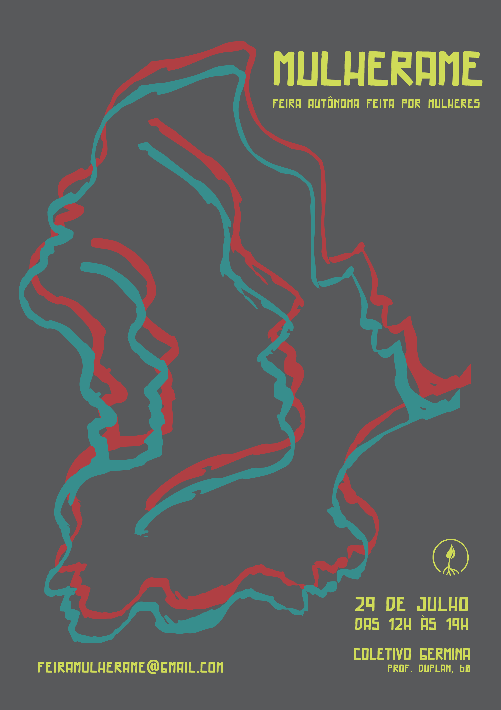

FEIRA MULHERAME
A ideia de fazer uma feira de produtos feitos somente por mulheres surgiu da necessidade de um evento que reunisse e valorizasse este trabalho de forma acolhedora e destacada. Nos colocando na rua e mudando o conceito do papel tradicional da mulher, desejamos instigar outros pensares com nossos produtos e criações subvertendo o que é imposto sobre nós. A Feira Mulherame deseja criar autonomia, união e dar início a uma rede de mulheres que se impulsionam.
Ilustração de Luana Faustini e concepção do cartaz em parceria com Lu Rabello.

voltar